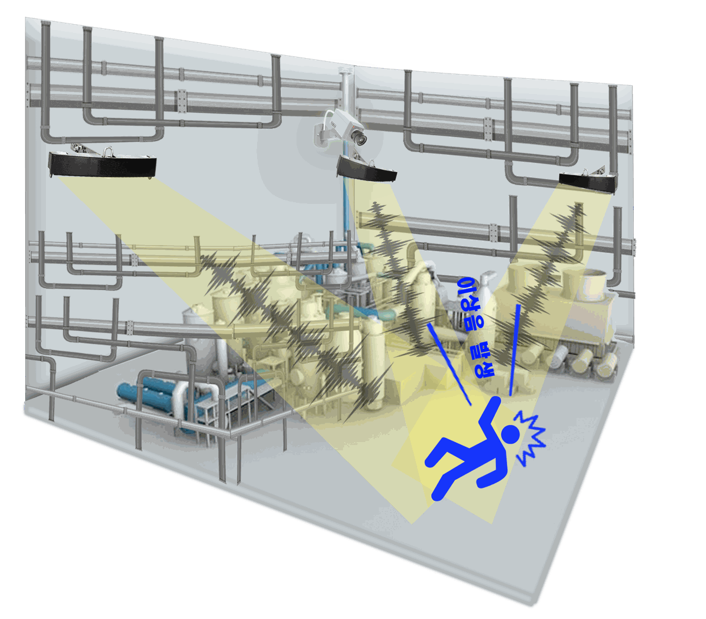
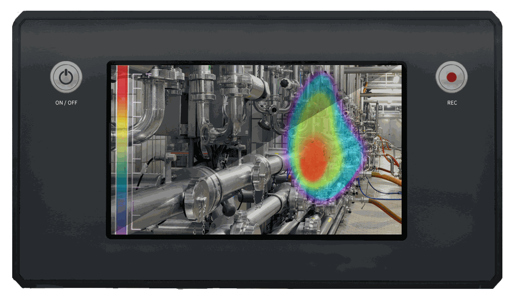

카메라가 보지 못하는 곳을
소리로 봅니다
같은 음향 기술을 도시 소음 관리, 산업 현장 안전, 설비 점검에 맞게 나눠 제공합니다.
주요 사업 분야
소리를 듣고 판단하는 같은 기술을 도시, 산업 현장, 국방까지 넓혀 가고 있습니다.
이륜차 소음 단속·도시 민원 대응
- AI 음향 분석으로 움직이는 소음원 자동 탐지
- 무인 단속 카메라와 연결해 위반 차량 실시간 식별
- 지자체 소음 민원이 몰리는 곳 상시 모니터링
스마트시티 생활안전 인프라
- 충돌음, 비명, 이상 소음 같은 위험음 조기 감지
- 카메라 사각지대를 채우는 센싱 노드 구축
- 도시 통합관제 시스템과 연계
산업·건설 현장 안전 모니터링
- 설비 이상음과 진동으로 고장 징후 탐지
- 중장비 접근과 위험 상황 조기 경보
- 작업장 안전 데이터 수집과 분석
국방·보안 감시
확장 추진- 잘 드러나지 않는 표적을 소리로 먼저 인지
- 경계 작전을 돕는 보조 센서
- 여러 감시 장비와 연동하는 기술 개발
피지컬 AI 감각 인지 플랫폼
Physical AI OS- 음향·영상·진동 데이터를 한 번에 분석하는 감각 인지 플랫폼
- AI가 환경을 인지하고 상황에 맞게 대응하는 VLA(Vision-Language-Action) 기반 시스템으로 확장
- 도시·산업·국방 현장에 쓸 수 있는 Physical AI 운영체계(OS) 개발
스마트시티 소음 관측
소음 민원이 반복되는 곳에 센서를 설치하면 누가, 언제, 어디서 소음을 냈는지 기록이 남습니다. 담당 공무원은 현장에 출동하지 않아도 단속 장소와 시간, 시설 개선 위치를 정할 수 있습니다.

주민
우리 집 앞에서 야간 소음이 얼마나 반복되는지, 다른 지역과 비교하면 어떤지 확인합니다.
행정
단속 시간과 장소, 방음 시설을 설치할 위치를 기록에 근거해 정합니다.
정책
쌓인 데이터로 생활 영향 지표를 만들고 정책 효과를 평가합니다.
| 주요 대상 | 이륜차 소음, 공사장 소음, 차량 경적, 생활 소음 민원 지역 |
|---|---|
| 설치 위치 | CCTV 지주, 차량검지시스템 지주 등 기존 시설물 |
| 제공 화면 | 실시간 관제, 지점별·시간대별 소음 기록, 민원 대응 리포트 |

산업안전 이상음 탐지
CCTV는 렌즈가 향한 곳만 봅니다. 커즈모스 센서는 넓은 범위의 소리를 듣고 사고음이나 설비 이상음이 나면 위치를 계산해 카메라를 그쪽으로 돌립니다.
중대재해처벌법이 50인 미만 사업장까지 넓어지면서, 사고를 빨리 알아채고 대응한 기록을 남기는 일이 더 중요해졌습니다.
이상음이 나면 이렇게 움직입니다
이상음 발생
현장 어디선가 사고음이나 설비 이상음이 납니다.
탐지·위치 추정
센서가 소리를 분류하고 발생 위치를 계산합니다.
CCTV 연동
가장 가까운 카메라를 그 위치로 돌립니다.
관제 알림
관제실에 영상과 함께 알림을 보내고 기록을 남깁니다.
휴대용 초음파 카메라
설치된 센서가 이상 징후를 알려 주면, 점검자가 이 카메라를 들고 현장에 갑니다. 화면에 보이는 설비 위로 초음파가 나는 지점을 색으로 겹쳐 보여 주기 때문에 고장 위치를 바로 찾을 수 있습니다.
| 화면 | 7인치 디스플레이 |
|---|---|
| 배터리 | 2시간 이상 사용 |
| 센서 | 마이크로폰 배열, 카메라, 온도 센서 |
| 기능 | 음향 영상 녹화, 오디오 출력 |

휴대용 카메라로 이상음 탐지
음향 신호 처리
카메라 영상과 음향 영상 결합
화면으로 문제 지점 확인